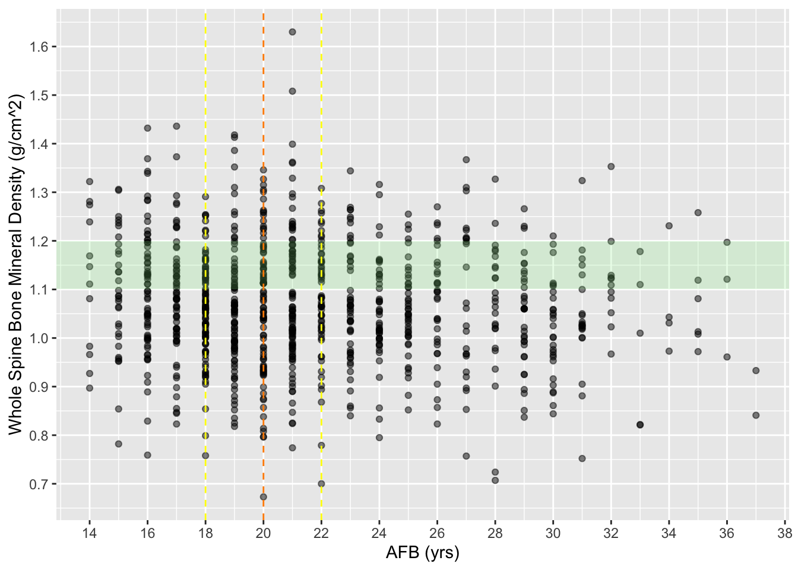
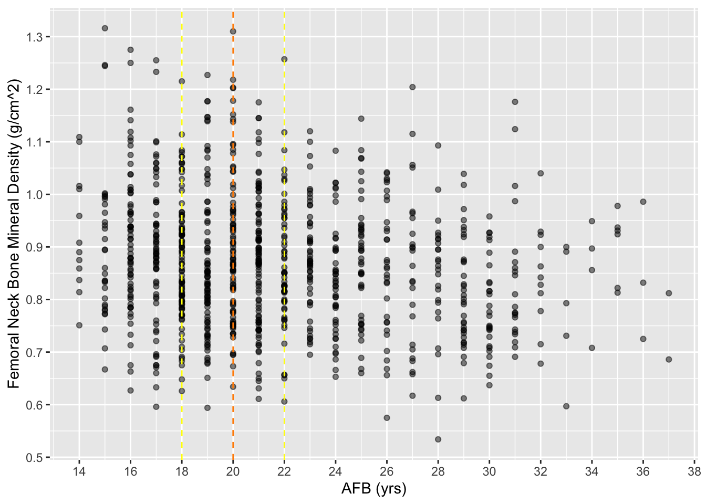
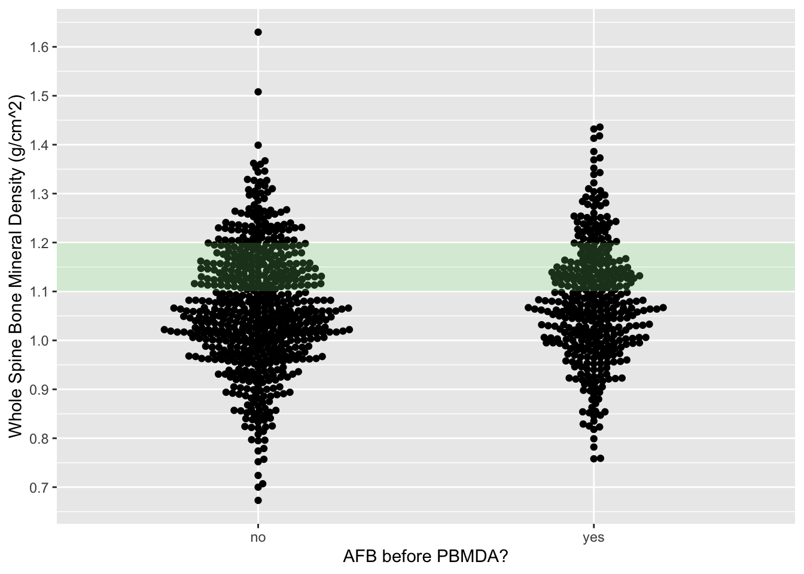
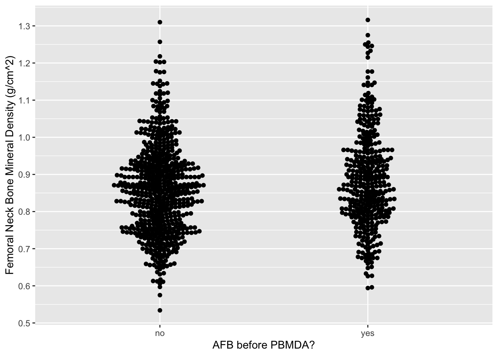
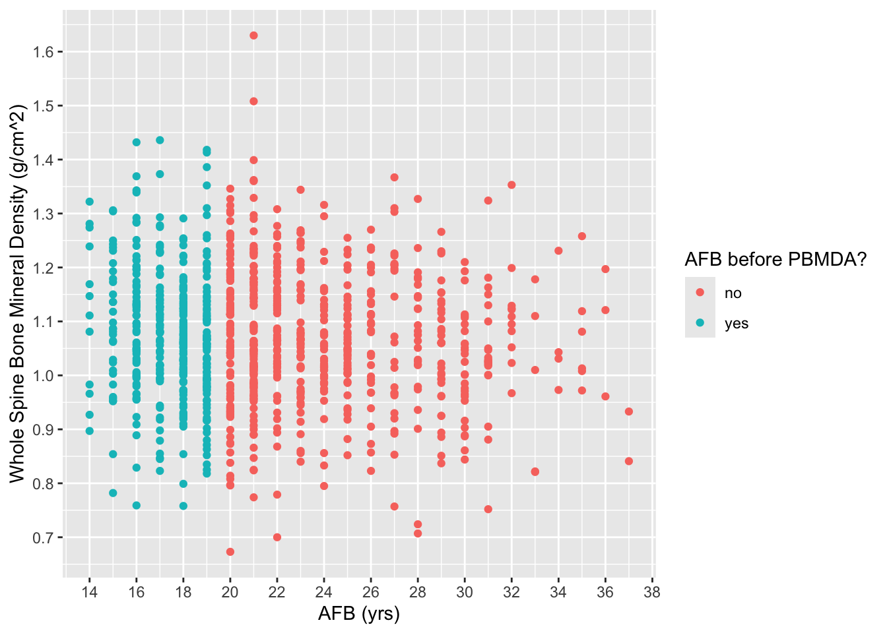
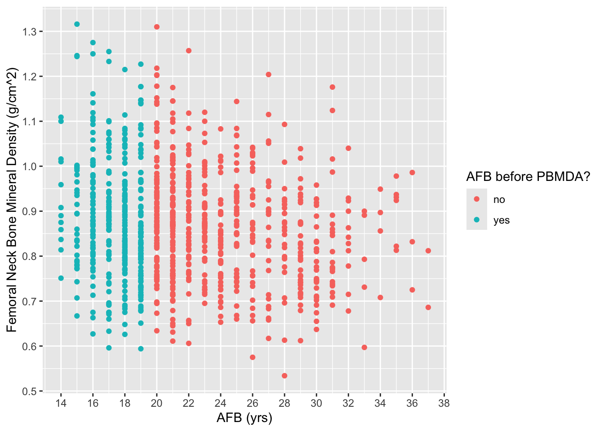

Last updated: 2025-02-15
Checks: 7 0
Knit directory: afb_plo_aaba_2025/
This reproducible R Markdown analysis was created with workflowr (version 1.7.1). The Checks tab describes the reproducibility checks that were applied when the results were created. The Past versions tab lists the development history.
Great! Since the R Markdown file has been committed to the Git repository, you know the exact version of the code that produced these results.
Great job! The global environment was empty. Objects defined in the global environment can affect the analysis in your R Markdown file in unknown ways. For reproduciblity it’s best to always run the code in an empty environment.
The command set.seed(20250126) was run prior to running
the code in the R Markdown file. Setting a seed ensures that any results
that rely on randomness, e.g. subsampling or permutations, are
reproducible.
Great job! Recording the operating system, R version, and package versions is critical for reproducibility.
Nice! There were no cached chunks for this analysis, so you can be confident that you successfully produced the results during this run.
Great job! Using relative paths to the files within your workflowr project makes it easier to run your code on other machines.
Great! You are using Git for version control. Tracking code development and connecting the code version to the results is critical for reproducibility.
The results in this page were generated with repository version db6c7d9. See the Past versions tab to see a history of the changes made to the R Markdown and HTML files.
Note that you need to be careful to ensure that all relevant files for
the analysis have been committed to Git prior to generating the results
(you can use wflow_publish or
wflow_git_commit). workflowr only checks the R Markdown
file, but you know if there are other scripts or data files that it
depends on. Below is the status of the Git repository when the results
were generated:
Ignored files:
Ignored: .DS_Store
Ignored: .RData
Ignored: .Rhistory
Ignored: .Rproj.user/
Note that any generated files, e.g. HTML, png, CSS, etc., are not included in this status report because it is ok for generated content to have uncommitted changes.
These are the previous versions of the repository in which changes were
made to the R Markdown (analysis/prelim_analysis.Rmd) and
HTML (docs/prelim_analysis.html) files. If you’ve
configured a remote Git repository (see ?wflow_git_remote),
click on the hyperlinks in the table below to view the files as they
were in that past version.
| File | Version | Author | Date | Message |
|---|---|---|---|---|
| html | 1751f9e | Calli Quire | 2025-02-14 | Build site. |
| Rmd | 069404e | Calli Quire | 2025-02-14 | more actual analysis |
The downloaded binary packages are in
/var/folders/ps/8glpgwws46q79hzcgj61tlsr0000gn/T//RtmpsbT8t2/downloaded_packages
The downloaded binary packages are in
/var/folders/ps/8glpgwws46q79hzcgj61tlsr0000gn/T//RtmpsbT8t2/downloaded_packages
The downloaded binary packages are in
/var/folders/ps/8glpgwws46q79hzcgj61tlsr0000gn/T//RtmpsbT8t2/downloaded_packages
The downloaded binary packages are in
/var/folders/ps/8glpgwws46q79hzcgj61tlsr0000gn/T//RtmpsbT8t2/downloaded_packages
The downloaded binary packages are in
/var/folders/ps/8glpgwws46q79hzcgj61tlsr0000gn/T//RtmpsbT8t2/downloaded_packages
The downloaded binary packages are in
/var/folders/ps/8glpgwws46q79hzcgj61tlsr0000gn/T//RtmpsbT8t2/downloaded_packagesR package versions:base : 4.4.2
survey : 4.4.2
dplyr : 1.1.4 # Download and read data
# Demographic (DEMO)
# isolated participant identification/sequence number, gender, age, variances
download.file("https://wwwn.cdc.gov/Nchs/Data/Nhanes/Public/2007/DataFiles/DEMO_E.XPT", tf <- tempfile(), mode="wb")
DEMO_E <- foreign::read.xport(tf)[,c("SEQN","RIAGENDR","RIDAGEYR","SDMVSTRA","SDMVPSU","WTMEC2YR")]
download.file("https://wwwn.cdc.gov/Nchs/Data/Nhanes/Public/2009/DataFiles/DEMO_F.xpt", tf <- tempfile(), mode="wb")
DEMO_F <- foreign::read.xport(tf)[,c("SEQN","RIAGENDR","RIDAGEYR","SDMVSTRA","SDMVPSU","WTMEC2YR")]
# Reproductive Health Questions (RHQ)
# isolated sequence number, age at first live birth, has had regular periods in the last 12 mo, reason for not having regular periods in last 12 mo
download.file("https://wwwn.cdc.gov/Nchs/Data/Nhanes/Public/2007/DataFiles/RHQ_E.XPT", tf <- tempfile(), mode="wb")
RHQ_E <- foreign::read.xport(tf)[,c("SEQN","RHD180", "RHQ031", "RHD042")]
download.file("https://wwwn.cdc.gov/Nchs/Data/Nhanes/Public/2009/DataFiles/RHQ_F.xpt", tf <- tempfile(), mode="wb")
RHQ_F <- foreign::read.xport(tf)[,c("SEQN","RHD180", "RHQ031", "RHD042")]
# Dual-Energy X-ray Absorptiometry - Total Spine (DXXSPN)
# isolated sequence number, total spine BMD
download.file("https://wwwn.cdc.gov/Nchs/Data/Nhanes/Public/2007/DataFiles/DXXSPN_E.xpt", tf <- tempfile(), mode="wb")
DXXSPN_E <- foreign::read.xport(tf)[,c("SEQN", "DXXOSBMD")]
download.file("https://wwwn.cdc.gov/Nchs/Data/Nhanes/Public/2009/DataFiles/DXXSPN_F.xpt", tf <- tempfile(), mode="wb")
DXXSPN_F <- foreign::read.xport(tf)[,c("SEQN", "DXXOSBMD")]
# Dual-Energy X-ray Absorptiometry - Femur (DXXFEM)
# isolated sequence number, femoral neck BMD
download.file("https://wwwn.cdc.gov/Nchs/Data/Nhanes/Public/2007/DataFiles/DXXFEM_E.xpt", tf <- tempfile(), mode="wb")
DXXFEM_E <- foreign::read.xport(tf)[,c("SEQN", "DXXNKBMD")]
download.file("https://wwwn.cdc.gov/Nchs/Data/Nhanes/Public/2009/DataFiles/DXXFEM_F.xpt", tf <- tempfile(), mode="wb")
DXXFEM_F <- foreign::read.xport(tf)[,c("SEQN", "DXXNKBMD")]# combining D, E data sets
DEMO <- bind_rows(DEMO_E, DEMO_F)
RHQ <- bind_rows(RHQ_E, RHQ_F)
DXXSPN <- bind_rows(DXXSPN_E, DXXSPN_F)
DXXFEM <- bind_rows(DXXFEM_E, DXXFEM_F)# merging DEMO and RHQ
data <- left_join(DEMO, RHQ, by = "SEQN")
# merging data (includes DEMO, RHQ) w/ DXXSPN
medium_data <- left_join(data, DXXSPN, by = "SEQN")
# merging medium_data (includes DEMO, RHQ, DXXSPN) w/ DXXFEM
mega_data <- left_join(medium_data, DXXFEM, by = "SEQN")# removing missing AFB values from data set; will subsequently remove all males from set
fem_mega_data <- drop_na(mega_data, "RHD180")*** want to omit participants who are menopausal or postmenopausal; can do so by omitting those who are: (1) not having a menstrual period in past 12mo and not b/c they were pregnant, breastfeeding, or had a hysterectomy, and (1A) if had hysterectomy, are they below the avg age of menopause onset 49 yo
# omit missing (N/A) values from RHQ031
fem_mega_data_1 <- drop_na(fem_mega_data, "RHQ031")
# omit participants who answer menopause (7), other (9), refused (77), don't know (99) to RHD043
# this removes participants who aren't having periods b/c of menopause, another reason, or refused/don't know
fem_mega_data_2 <- subset(fem_mega_data_1, !(RHD042 %in% c(7, 8, 9, 77, 99)))
# omit participants who answer >/= 49 to RIDAGEYR
# this removes participants who may have had a hysterectomy, and therefore cannot say if they are experiencing menopause (based on lack of menstruation), and are at or above the average age that menopause occurs
fert_fem_mega_data <- subset(fem_mega_data_2, !(RIDAGEYR %in% c(49, 50, 51, 52, 53, 54, 55, 56, 57, 58, 59, 60, 61, 62, 63, 64, 65, 66, 67, 68, 69, 70, 71, 72, 73, 74, 75, 76, 77, 78, 79, 80)))# this removes any participants who are missing BMD data
bmd_fert_fem_mega_data <- drop_na(fert_fem_mega_data, "DXXOSBMD", "DXXNKBMD")# this adds a column for if participants' age at first birth was before age of peak bone mineral density accrual (PBMDA) or at/after age of PBMDA
# if birth occurred before participant was 20, coded 1; if occurred on or after participant was 20, coded 0
bmd_fert_fem_mega_data <- bmd_fert_fem_mega_data %>%
mutate(PBMDA = ifelse(RHD180 < 20, "yes", "no" ))# run an univariate linear regression where independent/x = AFB, dependent/y = whole spine BMD
ulm_os <- lm(DXXOSBMD ~ RHD180, data = bmd_fert_fem_mega_data)
# visualize ulm_os via scatter plot
ulm_os_plot <- ggplot(ulm_os, aes(x = RHD180,
y = DXXOSBMD)) + geom_point(alpha = 0.5) + scale_x_continuous("AFB (yrs)", breaks = seq(0, 40, by = 2)) + scale_y_continuous("Whole Spine Bone Mineral Density (g/cm^2)", breaks = seq(0, 2, by = 0.1)) + annotate("rect", xmin = -Inf, xmax = Inf, ymin = 1.1, ymax = 1.2, fill = "lightgreen", alpha = 0.2) + geom_vline(xintercept = 20, linetype = "dashed", color = "darkorange") + geom_vline(xintercept = 22, linetype = "dashed", color = "yellow") + geom_vline(xintercept = 18, linetype = "dashed", color = "yellow")
# view the plot
print(ulm_os_plot)
| Version | Author | Date |
|---|---|---|
| 1751f9e | Calli Quire | 2025-02-14 |
# run an univariate linear regression where independent/x = AFB, dependent/y = femoral neck BMD
ulm_nk <- lm(DXXNKBMD ~ RHD180, data = bmd_fert_fem_mega_data)
# visualize ulm_nk via scatter plot
# ***want to add green rectangle for where avg femoral neck BMD sits***
ulm_nk_plot <- ggplot(ulm_nk, aes(x = RHD180,
y = DXXNKBMD)) + geom_point(alpha = 0.5) + scale_x_continuous("AFB (yrs)", breaks = seq(0, 40, by = 2)) + scale_y_continuous("Femoral Neck Bone Mineral Density (g/cm^2)", breaks = seq(0, 2, by = 0.1)) + geom_vline(xintercept = 20, linetype = "dashed", color = "darkorange") + geom_vline(xintercept = 22, linetype = "dashed", color = "yellow") + geom_vline(xintercept = 18, linetype = "dashed", color = "yellow")
# view the plot
print(ulm_nk_plot)
| Version | Author | Date |
|---|---|---|
| 1751f9e | Calli Quire | 2025-02-14 |
# run an univariate linear regression where x = AFB (binary), y = whole spine BMD
ulm_os_bin <- lm(DXXOSBMD ~ PBMDA, data = bmd_fert_fem_mega_data)
# visualize ulm_os_bin via beeswarm plot
ulm_os_bin_plot <- ggplot(ulm_os_bin, aes(x = PBMDA, y = DXXOSBMD)) +
geom_beeswarm() + scale_x_discrete("AFB before PBMDA?") + scale_y_continuous("Whole Spine Bone Mineral Density (g/cm^2)", breaks = seq(0, 2, by = 0.1)) + annotate("rect", xmin = -Inf, xmax = Inf, ymin = 1.1, ymax = 1.2, fill = "lightgreen", alpha = 0.2)
# view the plot
print(ulm_os_bin_plot)
| Version | Author | Date |
|---|---|---|
| 1751f9e | Calli Quire | 2025-02-14 |
# run an univariate linear regression where x = AFB (binary), y = femoral neck BMD
ulm_nk_bin <- lm(DXXNKBMD ~ PBMDA, data = bmd_fert_fem_mega_data)
# visualize ulm_nk_bin via beeswarm plot
# ***want to add green rectangle for where avg femoral neck BMD sits***
ulm_nk_bin_plot <- ggplot(ulm_nk_bin, aes(x = PBMDA, y = DXXNKBMD)) +
geom_beeswarm() + scale_x_discrete("AFB before PBMDA?") + scale_y_continuous("Femoral Neck Bone Mineral Density (g/cm^2)", breaks = seq(0, 2, by = 0.1))
# view the plot
print(ulm_nk_bin_plot)
| Version | Author | Date |
|---|---|---|
| 1751f9e | Calli Quire | 2025-02-14 |
# run analysis
mlm_os <- lm(DXXOSBMD ~ RHD180 + PBMDA, data = bmd_fert_fem_mega_data)
summary(mlm_os)
Call:
lm(formula = DXXOSBMD ~ RHD180 + PBMDA, data = bmd_fert_fem_mega_data)
Residuals:
Min 1Q Median 3Q Max
-0.40650 -0.07712 -0.00666 0.08078 0.55378
Coefficients:
Estimate Std. Error t value Pr(>|t|)
(Intercept) 1.145025 0.030647 37.362 < 2e-16 ***
RHD180 -0.003276 0.001239 -2.645 0.00831 **
PBMDAyes -0.012394 0.012048 -1.029 0.30386
---
Signif. codes: 0 '***' 0.001 '**' 0.01 '*' 0.05 '.' 0.1 ' ' 1
Residual standard error: 0.1237 on 950 degrees of freedom
Multiple R-squared: 0.009098, Adjusted R-squared: 0.007012
F-statistic: 4.361 on 2 and 950 DF, p-value: 0.01302confint(mlm_os) 2.5 % 97.5 %
(Intercept) 1.084882698 1.2051682306
RHD180 -0.005707344 -0.0008453736
PBMDAyes -0.036037842 0.0112494609# visualize
mlm_os_plot <- ggplot(mlm_os, aes(y = DXXOSBMD, x = RHD180, color = PBMDA)) + geom_point() + scale_x_continuous("AFB (yrs)", breaks = seq(0, 40, by = 2)) + scale_y_continuous("Whole Spine Bone Mineral Density (g/cm^2)", breaks = seq(0, 2, by = 0.1)) + scale_color_discrete("AFB before PBMDA?")
# view
print(mlm_os_plot)
| Version | Author | Date |
|---|---|---|
| 1751f9e | Calli Quire | 2025-02-14 |
# run analysis
mlm_nk <- lm(DXXNKBMD ~ RHD180 + PBMDA, data = bmd_fert_fem_mega_data)
summary(mlm_nk)
Call:
lm(formula = DXXNKBMD ~ RHD180 + PBMDA, data = bmd_fert_fem_mega_data)
Residuals:
Min 1Q Median 3Q Max
-0.30611 -0.08896 -0.00982 0.07803 0.42247
Coefficients:
Estimate Std. Error t value Pr(>|t|)
(Intercept) 1.006078 0.030997 32.457 < 2e-16 ***
RHD180 -0.005927 0.001253 -4.731 2.58e-06 ***
PBMDAyes -0.017282 0.012186 -1.418 0.156
---
Signif. codes: 0 '***' 0.001 '**' 0.01 '*' 0.05 '.' 0.1 ' ' 1
Residual standard error: 0.1251 on 950 degrees of freedom
Multiple R-squared: 0.03178, Adjusted R-squared: 0.02974
F-statistic: 15.59 on 2 and 950 DF, p-value: 2.174e-07confint(mlm_nk) 2.5 % 97.5 %
(Intercept) 0.945247374 1.066907648
RHD180 -0.008386019 -0.003468481
PBMDAyes -0.041195377 0.006632372#visualize
mlm_nk_plot <- ggplot(mlm_nk, aes(y = DXXNKBMD, x = RHD180, color = PBMDA)) + geom_point() + scale_x_continuous("AFB (yrs)", breaks = seq(0, 40, by = 2)) + scale_y_continuous("Femoral Neck Bone Mineral Density (g/cm^2)", breaks = seq(0, 2, by = 0.1)) + scale_color_discrete("AFB before PBMDA?")
# view
print(mlm_nk_plot)
| Version | Author | Date |
|---|---|---|
| 1751f9e | Calli Quire | 2025-02-14 |
sessionInfo()R version 4.4.2 (2024-10-31)
Platform: aarch64-apple-darwin20
Running under: macOS Sonoma 14.6
Matrix products: default
BLAS: /Library/Frameworks/R.framework/Versions/4.4-arm64/Resources/lib/libRblas.0.dylib
LAPACK: /Library/Frameworks/R.framework/Versions/4.4-arm64/Resources/lib/libRlapack.dylib; LAPACK version 3.12.0
locale:
[1] en_US.UTF-8/en_US.UTF-8/en_US.UTF-8/C/en_US.UTF-8/en_US.UTF-8
time zone: America/Detroit
tzcode source: internal
attached base packages:
[1] grid stats graphics grDevices utils datasets methods
[8] base
other attached packages:
[1] ggbeeswarm_0.7.2 ggplot2_3.5.1 tidyr_1.3.1 haven_2.5.4
[5] survey_4.4-2 survival_3.7-0 Matrix_1.7-1 dplyr_1.1.4
[9] workflowr_1.7.1
loaded via a namespace (and not attached):
[1] sass_0.4.9 generics_0.1.3 stringi_1.8.4 lattice_0.22-6
[5] hms_1.1.3 digest_0.6.37 magrittr_2.0.3 evaluate_1.0.3
[9] fastmap_1.2.0 rprojroot_2.0.4 jsonlite_1.8.9 processx_3.8.5
[13] whisker_0.4.1 DBI_1.2.3 ps_1.8.1 promises_1.3.2
[17] httr_1.4.7 purrr_1.0.2 scales_1.3.0 jquerylib_0.1.4
[21] cli_3.6.3 mitools_2.4 rlang_1.1.5 munsell_0.5.1
[25] splines_4.4.2 withr_3.0.2 cachem_1.1.0 yaml_2.3.10
[29] tools_4.4.2 colorspace_2.1-1 httpuv_1.6.15 forcats_1.0.0
[33] vctrs_0.6.5 R6_2.5.1 lifecycle_1.0.4 git2r_0.35.0
[37] stringr_1.5.1 fs_1.6.5 vipor_0.4.7 foreign_0.8-87
[41] beeswarm_0.4.0 pkgconfig_2.0.3 callr_3.7.6 gtable_0.3.6
[45] pillar_1.10.1 bslib_0.8.0 later_1.4.1 glue_1.8.0
[49] Rcpp_1.0.14 xfun_0.50 tibble_3.2.1 tidyselect_1.2.1
[53] rstudioapi_0.17.1 knitr_1.49 farver_2.1.2 htmltools_0.5.8.1
[57] rmarkdown_2.29 compiler_4.4.2 getPass_0.2-4